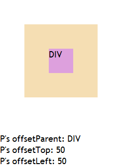
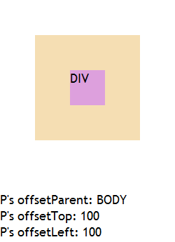

无。
在 IE6 IE7 IE8(Q) 中，一个 'position' 特性值为 'static' 的元素的 offsetParent 可能会是其最近的、触发了 hasLayout 的父元素。
同时其 offsetTop、offsetLeft 的返回值参照元素也是距离其最近的触发了 hasLayout 的祖先级元素。
对于元素的 offetParent，由于可能取得的元素不一致，造成页面脚本运行出现不一致或出错。另外由于元素的 offsetLeft、offsetTop 计算值都参照它的 offsetParent，因此元素的 offsetLeft、offsetTop 值也会不一致。
| IE6 IE7 IE8(Q) |
|---|
元素 A 的 offsetParent 的计算遵从下面的算法：
关于 offsetTop、offsetLeft、offsetParent 的更多信息，请参考 CSSOM View Module 草案 8.1 The offsetParent, offsetTop, offsetLeft, offsetWidth, and offsetHeight attributes 中的内容。
测试以下代码：
<!DOCTYPE html>
<html>
<head>
<script>
function $(id) { return document.getElementById(id); }
window.onload = function () {
$('info').innerHTML += '<br />P\'s offsetParent: ' + $('P').offsetParent.tagName;
$('info').innerHTML += '<br />P\'s offsetTop: ' + $('P').offsetTop;
$('info').innerHTML += '<br />P\'s offsetLeft: ' + $('P').offsetLeft;
}
</script>
</head>
<body style="margin:0; font:18px 'Trebuchet MS';">
<div style="float:left; margin:50px; background:wheat;">
<p id="P" style="width:50px; height:50px; margin:50px; background:plum;">P</p>
</div>
<div id="info" style="clear:left;"></div>
</body>
</html>
此例中，依照 W3C 草案的规则，P 的 offsetParent 应为 BODY 元素，且其 offsetTop、offsetLeft 的返回值也均参照 BODY 元素。
实际结果如下：
| IE6 IE7 IE8(Q) | IE8(S) Firefox Chrome Safari Opera |
|---|---|
|  |  |
可见 IE6 IE7 IE8(Q) 中，P (position:static) 的 offsetParent 不是 BODY 元素，触发了 hasLayout 特性的元素 (由于设定了 'float' 特性导致 P.currentStyle.hasLayout = true) 也可以被当作 offsetParent 返回，同时其 offsetTop、offsetLeft 的返回值也是参照的该触发了 hasLayout 的祖先元素。
可考虑对于为在 IE 中触发了 hasLayout 特性的元素设置 'position' 特性值为非 'static' 值，如 'relative'，或避免使用元素的 offsetTop、offsetLeft、offsetParent 属性。
| 操作系统版本: | Windows 7 Ultimate build 7600 |
|---|---|
| 浏览器版本: | IE6 IE7 IE8 Firefox 3.6.12 Chrome 8.0.552.18 dev Safari 5.0.2 Opera 10.63 |
| 测试页面: | offsetParent.html |
| 本文更新时间: | 2010-10-28 |
offsetParent offsetLeft offsetTop hasLayout position static